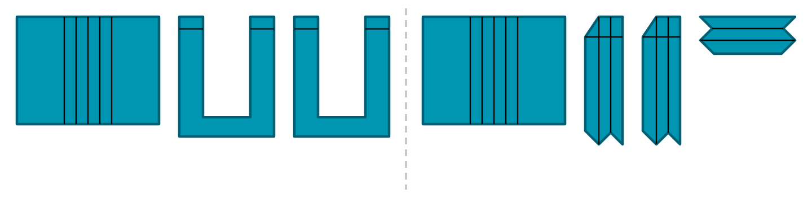

Options guide
A patch pocket (or applied pocket) is a piece of fabric sewn onto the outside of a garment: the edges are folded under, then the pocket is topstitched on three sides.
Pocket bottom
Rectangular, bevelled corners or rounded corners.


Pocket opening
Straight (horizontal) or slanted (inclined, at an angle).

Gussets and pleats
3 possibilities:
- A side gusset: a strip along the sides and bottom.
- A centre pleat: a box pleat (outside) or an inverted pleat (inside, invisible).
- Double gusset: side gusset and centre pleat.


Construction variants
For the side gusset and for the double gusset, the assistant also offers a construction variant in which the pieces are designed and assembled differently:
- Side gusset, one-piece variant: the pocket front and the gusset pleats are on the same piece. The cuff facing is integrated into this piece.
- Double gusset (centre and side), variant with separate gussets: the front is identical to that of the pocket with a centre pleat. The gussets are cut separately: 2 identical side pieces and 1 bottom piece. The cuff facing is an added cuff facing.
These variants are slightly more complicated to cut and sew, but the gussets hold their shape better thanks to a centre seam in the middle of each one. They are available only with the rectangular pocket bottom and the straight opening.

Cuff facing
Pocket cuff facing: a turn-back of fabric at the top of the pocket, turned to the outside or to the inside. Turned to the inside, the cuff facing is invisible.
- Simple pockets and pockets with side gusset: the cuff facing is integrated into the front piece (a single piece).
- Pockets with centre pleat and double-gusset pockets: the cuff facing is not integrated; it is an added pocket cuff facing (a separate piece).

Flap
Flap: a piece that covers the pocket opening, straight or slanted, topstitched or inserted. A flap can be combined with any pocket model. Like the pocket bottom, the flap can be rectangular, with bevelled corners or with rounded corners. The choice of flap type is independent of the pocket type chosen.
The flap is cut on the fold of the fabric along its top edge; it is not sewn along that edge. Two notches mark the gap left open in the seam, used to turn the piece right side out.


Need a technical term? See the English–French glossary.